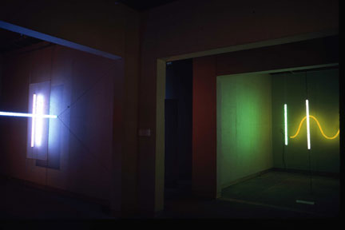

|
'The Light, Colour Space Exhibition', SA School of Art Gallery, 1974.
'Cube', fluro tubes, wire, electrical components, 1974 SA School of Art courtyard, Also at Griffith University, Brisbane, 1976
'Perspective Grid', 1974
'Interior Gallery Installation,' 1974.
'Floor Piece,' 1974.
Light, Colour Space,' 1974.
Light, Colour Space exhibition, 1974.
'Light, Colour Space Exhibition', Contemporary Art Society Gallery, 1974.
 Contemporary Art Society Gallery, 1974.
Contemporary Art Society Gallery, 1974
Queensland Art Gallery,1976 'Rock and Fluoro Tube,' 1976.Ian Hamilton
|